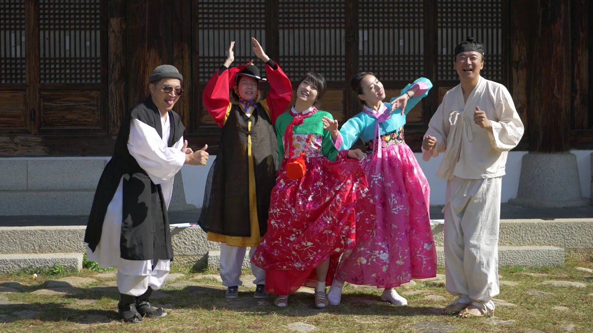
01나는 원래 대전에서 로맨틱코미디를 찍으려고 했었다
대전을 온전히 담은 장편. 서울·대전·광주에서 개봉했다.
FILMMAKER · AI CREATOR · DAEJEON
독립영화의 감성과 AI 기술이 만나는 곳
2011년 단편에서 2026년 AI영화제까지 — 대전에서 찍고, 세계 영화제에서 만났습니다.
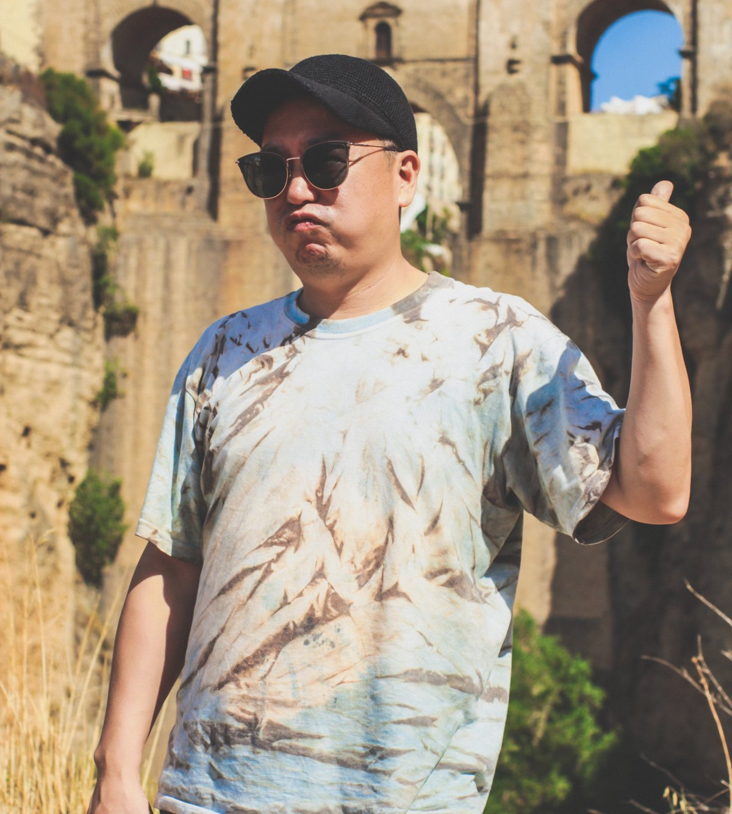
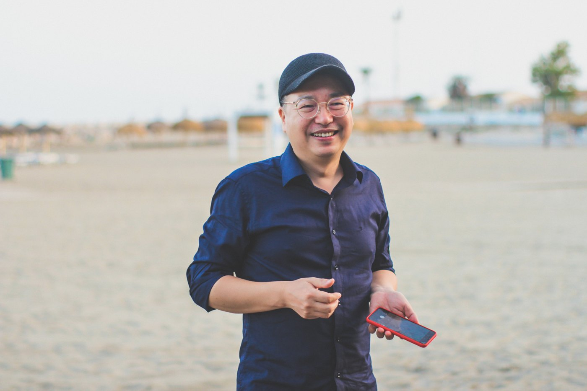
FILMMAKER & AI CREATOR
배기원 감독은 대전을 기반으로 활동하는 독립영화 감독입니다. 2018년 대흥영화사를 세우고, 대전의 역사와 사람을 담은 영화를 만들어 왔습니다. 〈인터뷰-사죄의 날〉(2016)로 제38회 모스크바국제영화제 경쟁부문에 올랐고, 2017년에는 칸국제영화제 숏필름코너에 참가했습니다. 〈대전, 1960〉(2022)은 미국 폰트로더데일·아르파, 스페인 마르베야국제영화제에 초청됐습니다.
2018년 장편 《나는 원래 대전에서 로맨틱코미디를 찍으려고 했었다》로 극장 개봉을 했습니다. 그 영화의 전국 관객은 116명이었습니다. 그 116명에서 출발해 천만 관객에게 닿는 영화를 만드는 것이 지금의 목표입니다. 대전국제단편영화제와 대전국제AI영화제를 만들고 운영하며, AI 영상 제작과 강의로 현장의 문법을 넓혀 왔습니다.
전국 관객 116명.
그 숫자에서 모든 이야기가 시작됐습니다.
SELECTED WORKS
2015년부터 2024년까지 — 대전의 역사와 사람, 그리고 웃음과 슬픔을 담은 여섯 편.

01대전을 온전히 담은 장편. 서울·대전·광주에서 개봉했다.
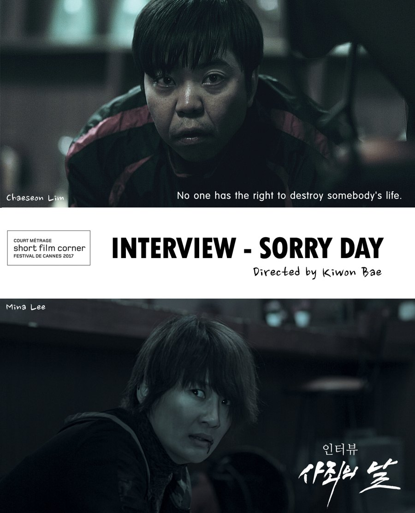
02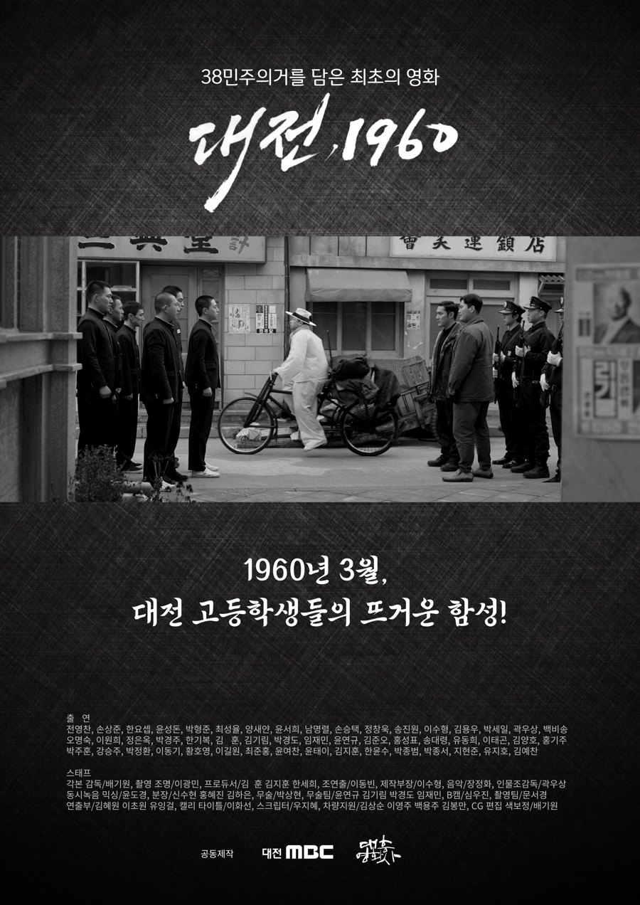
03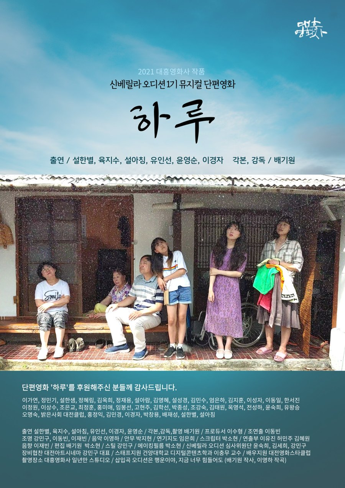
04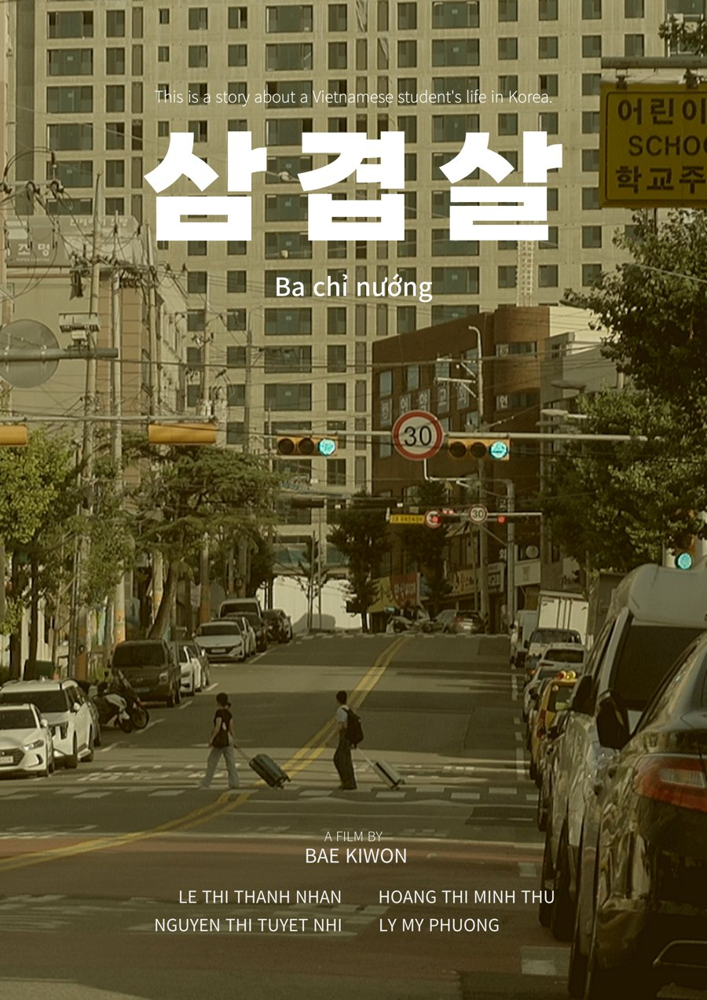
05인도 케랄라·푸네 단편영화제 초청작.
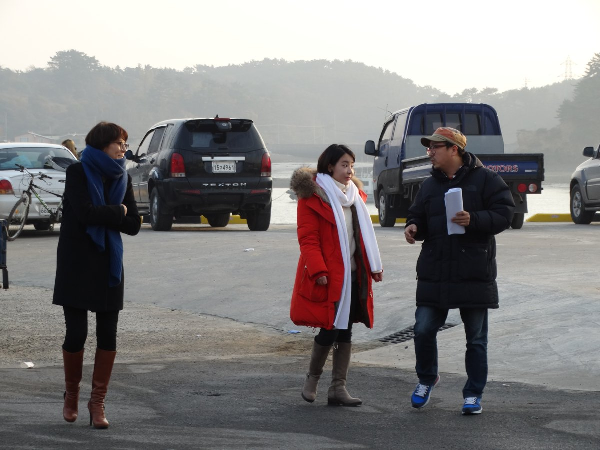
06충남문화산업진흥원 제작지원작. 서울세계단편영화제 은상, LA웹페스트 촬영상, 스페인 발렌시아 웹페스트 초청.
CREATIVE AI SOLUTIONS
현장에서 만든 영화, 기술로 넓힌 가능성. 대흥영화사가 직접 만들고 운영합니다.
생성형 AI로 기획·촬영·후반을 압축합니다. 대흥영화사가 직접 만든 AI 영상과 광고·홍보 영상.
대전국제단편영화제(DISFF, 매년 11월)와 대전국제AI영화제(DIAIF, 매년 4월)를 기획하고 운영합니다.
미디어 강의 10여 년, AI 영상 워크숍까지 누적 160여 회. 시민·학생·기관을 대상으로 합니다.
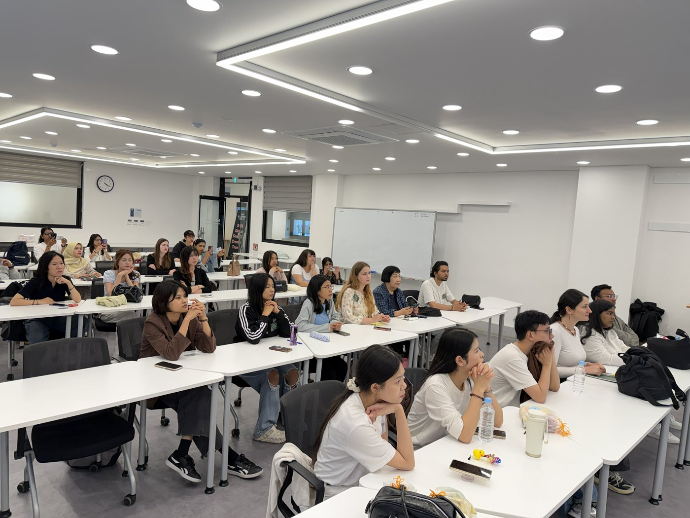
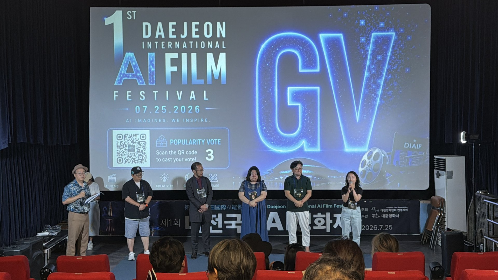
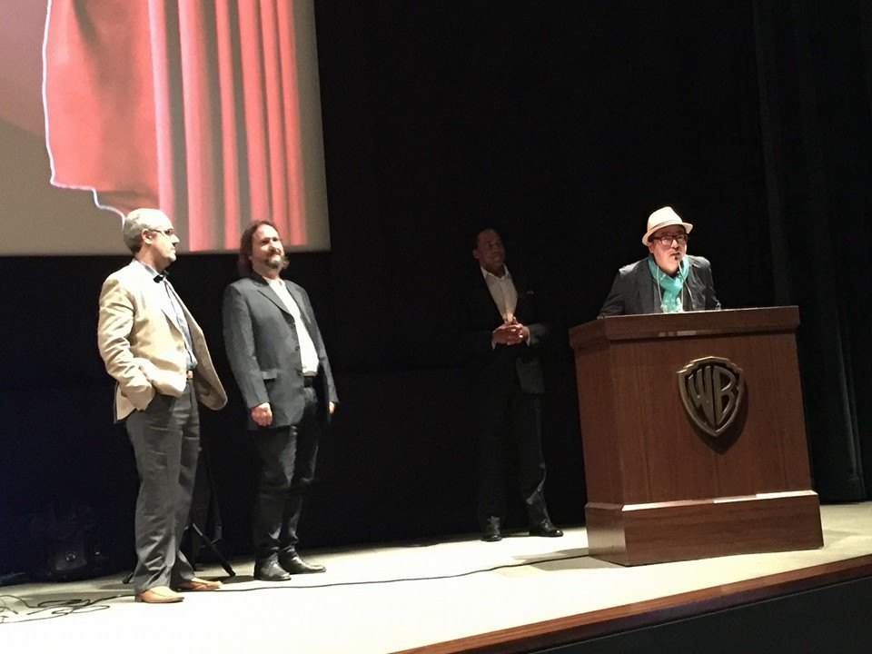
FILMS · AI PROJECTS · CREATIVE WORKS
2011년 첫 단편부터 현재까지 — 배기원 감독의 전체 필모그래피.
전주국제영화제 상영 · 올레스마트폰영화제
부천전국영상제 최우수상
부천국제판타스틱영화제 판타스틱단편걸작선 · 피렌체한국영화제 · 북한인권국제영화제
충남문화산업진흥원 제작지원작 · 서울세계단편영화제 은상 · LA웹페스트 촬영상 · 스페인 발렌시아 웹페스트
대전정보문화산업진흥원 제작지원작 · 모스크바국제영화제 경쟁 · 칸 숏필름코너 · 부천국제판타스틱영화제
극장 개봉 · 서울·대전·광주
조선후기 여성시인 김호연재 · 대전정보문화산업진흥원 제작지원작
대덕구 오정동 · 대전독립영화제
대덕문화관광재단 제작지원작 · 대청호가 그린 영화제
인도 케랄라·푸네 단편영화제 초청
상영·수상 이력은 정리해 순차적으로 업데이트합니다.
GET IN TOUCH
영화 제작 협업, AI 영상 제작, 강의와 영화제 운영 문의를 받습니다.